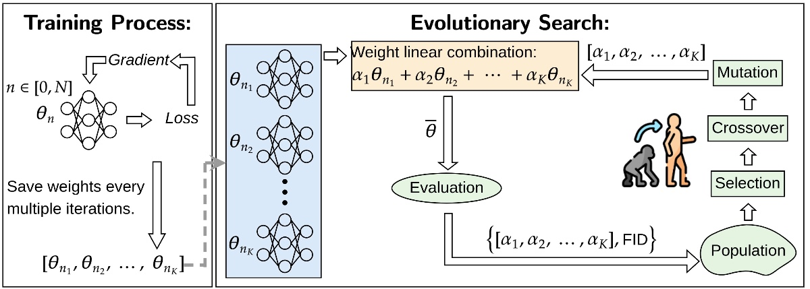

Linear Combination of Saved Checkpoints Makes Consistency and Diffusion Models Better
ICLR 2025* = Co-first authorsInternational Conference on Learning Representations

In brief
Training diffusion and consistency models discards a goldmine: the intermediate checkpoints. LCSC uses gradient-free evolutionary search to find a linear combination of saved checkpoints that beats any single one — including the EMA weights that virtually every diffusion pipeline uses by default, which the paper proves suboptimal. The result: up to 23x cheaper consistency-model training, one-step models that beat two-step baselines, and improved text-to-image generation, all without additional training.
Key takeaways
- High-quality weight basins sit near the training trajectory but cannot be reached by SGD or Adam — a linear combination of saved checkpoints can reach them, and searching the coefficients is gradient-free, so even non-differentiable metrics like FID can be optimized directly.
- EMA, the default weight-averaging in nearly every diffusion/consistency pipeline, is provably suboptimal; the searched coefficients include large negative values, meaning the best models lie outside the convex hull that averaging methods are confined to.
- Cuts training cost: on CIFAR-10, consistency distillation with only 50K iterations beats the fully trained 800K model (FID 3.10 vs 3.66), and small-batch training pushes the speedup to 23x (15x on ImageNet-64).
- Upgrades finished models: one-step sampling beats the released model's two-step FID on CIFAR-10 (2.44 vs 2.93), and diffusion sampling drops from 15 to 9 NFE at equal quality — users can briefly fine-tune a released checkpoint and apply LCSC.
- Works on LoRA checkpoints (ImageNet-64 consistency training: FID 15.75 to 4.90) and on text-to-image LCM-LoRA, where LCSC outputs win 66-77% of image comparisons on human-preference metrics.
Abstract
Diffusion Models (DM) and Consistency Models (CM) are two types of popular generative models with good generation quality on various tasks. When training DM and CM, intermediate weight checkpoints are not fully utilized and only the last converged checkpoint is used. In this work, we find that high-quality model weights often lie in a basin which cannot be reached by SGD but can be obtained by proper checkpoint averaging. Based on these observations, we propose LCSC, a simple but effective and efficient method to enhance the performance of DM and CM, by combining checkpoints along the training trajectory with coefficients deduced from evolutionary search. We demonstrate the value of LCSC through two use cases: (a) Reducing training cost. With LCSC, we only need to train DM/CM with fewer number of iterations and/or lower batch sizes to obtain comparable sample quality with the fully trained model. For example, LCSC achieves considerable training speedups for CM (23x on CIFAR-10 and 15x on ImageNet-64). (b) Enhancing pre-trained models. Assuming full training is already done, LCSC can further improve the generation quality or speed of the final converged models. For example, LCSC achieves better performance using 1 number of function evaluation (NFE) than the base model with 2 NFE on consistency distillation, and decreases the NFE of DM from 15 to 9 while maintaining the generation quality on CIFAR-10.
BibTeX
@inproceedings{zhu_lcsc,
title = {Linear Combination of Saved Checkpoints Makes Consistency and Diffusion Models Better},
author = {Liu, Enshu and Zhu, Junyi and Lin, Zinan and Ning, Xuefei and Wang, Shuaiqi and Blaschko, Matthew B. and Yekhanin, Sergey and Yan, Shengen and Dai, Guohao and Yang, Huazhong and Wang, Yu},
year = {2025},
booktitle = {International Conference on Learning Representations},
url = {https://arxiv.org/abs/2404.02241},
}